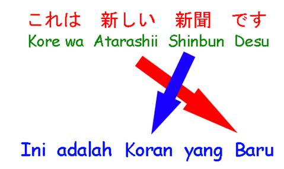

KATA
SIFAT I BAHASA JEPANG part 2
い・形容詞
i-Keiyoushi
Halo minna san, bagaimana pelajaran pertama kata sifatnya kemarin? Menarik tidak? Kemarin kita sudah mempelajari tentang kata
sifat i (i-keiyoushi「い・形容詞」).
Hayooo… Kotobanya sudah pada dihafal atau belum?
Kotoba dari kata sifat i itu perlu di hafal
ya. Seemuuanya..! karena di materi-materi
di depan saya tidak akan memberikan
kotoba untuk kata sifat i tersebut, saya sudah tumpahkan
kemarin di materi 1. Hohoho… oh ya, adapun di materi
2 ini adalah kelanjutan dari materi 1, yang belum mempelajari materi 1 harap kembali lagi
ya, tentang i-keiyoushi. Bagi yang sudah benar-benar
mengerti, kita lanjutkan…
Kemarin kita sudah membahas tentang perubahan kata sifat yang jika dihadapkan dengan situasi kalimat yang berbentuk negative dan juga positif, dan
juga perubahan untuk masa lampau.
Sekarang kita coba gabungkan
antara kata sifat dan kata benda. Andapun bertanya "Emangnya
bisa digabungkan?” saya pun menjawab, "Bisa dooong!!”
Misalnya :
KORAN BARU
Lihat kata di atas, itu merupakan
penggabungan antara kata benda dan kata sifat. Koran adalah
kata benda dan Baru adalah kata sifat. Dalam bahasa Jepang, untuk menggabungkannya sama saja, kata pertama dan kedua
tinggal disimpan saja secara beriringan,
namun polanya terbalik, yaitu menjadi :
Kata Sifat i
+ Kata Benda
Contoh kalimatnya
adalah
Untuk lebih
jelasnya, perhatikan gambar di bawah ini :

Tidak
ada yang dipersulit di sini, hanya digabungkan
saja namun terbalik dari versi
bahasa Indonesia.
Contoh lainnya :
Sementara, jika
Anda ingin menyatakan kalimat yang berbentuk negative, misalnya kata
Maka kalimatnya
akan berubah
menjadi
Betul, untuk
penggabungan kata sifat i dan kata benda, kata sifat-i tidak mengalami
perubahan, yang berubah adalah akhiran "desu「です」” nya…
Harap dicatat itu ya!!
KATA GANTI TANYA
Ada dua kata ganti tanya untuk
kata sifat-i yang ingin saya bahas kali ini. Ada di bawah sini loh!!
Anda pun kembali bertanya… "Wei-kun, cara menggunakannya gimana?”
Ettoo…
kasih tahu ga yaaa??
Wkwkwk… Gini
nih, cara
menggunakannya saya kasih contoh kalimat
saja ya…!
Simple kan cara
menggunakannya? Nah, yang kedua
ini, Anda tinggal menambahkan objek yang ditanyakan setelah kata "donna「どんな」” tersebut,, Anda pusing?
Saya juga… haha.. Lihat
contoh saja deh..
Untuk pertanyaan
"donna” ini lebih spesifik, bisa kan cara
membadakannya? Bisa dong.. mudah lah,, iya ga..?
Lebih mudah daripada…… haha.
KATA KETERANGAN
OK, ini yang terakhir ya. Ada beberapa
kata keterangan yang sering
digunakan untuk kata sifat ini. Perlu dihafal ya,
kata Anda akan
sering berhadapan dengan kata-kata keterangan di bawah ini. Langsung
saja,
Taihen 「たいへん」 = Sangat・・・
Totemo 「とても」 = ・・・Sekali/banget
Chotto 「ちょっと」 = Agak・・・
Amari 「あまり」 = Tidak
begitu・・・
Tabun 「たぶん」 = Mungkin
Kita comot satu per satu dan masukkan
ke dalam kalimat yuk kata keterangan di atas !!
Ket
:
Sebelum
saya akhiri, saya punya guyonan
kecil yang sering saya gunakan pas lagi ngobrol ama
orang jepang. Dan guyonan itu lumayan
bikin orang Jepang nyengir. Hehehe, ada hubungannya ama pelajaran di atas, tepatnya menggunakan kata "amari”…
Ketika pas ketemu dan ditanya
….
"Wei-kun, genki?「ウェイ君、元気？」”
Kalo agak
sedikit sakit, saya suka menjawab
:
"Amari genki janai kedo, mada
ikiru yo!「あまり元気じゃないけど、まだ生きるよ！」” yang artinya :
"Aku kurang sehat, tapi aku
masih hidup kok :D”
Hehe, reaksi
para lawan bicara pasti nyengir
deh (kalo yang ngerti). Boleh dicoba atau ga, tapi yang jelas,
jika kita tidak terlalu serius
dan tidak canggung, kita pasti bisa cepat
akrab dengan orang Jepang.
Yosh…
hari ini sampai disini ya…
kita lanjut di lain kesempatan. Di episode selanjutnya, kita membahas tentang kata sifat-na. Seperti apakah itu?
Tunggu saja tanggal mainnya..
Cmiiieeewww
Otsukaresama!!